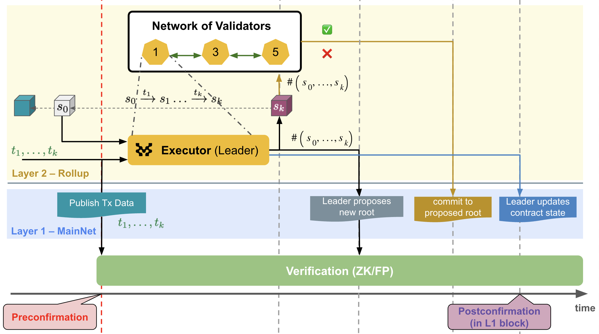
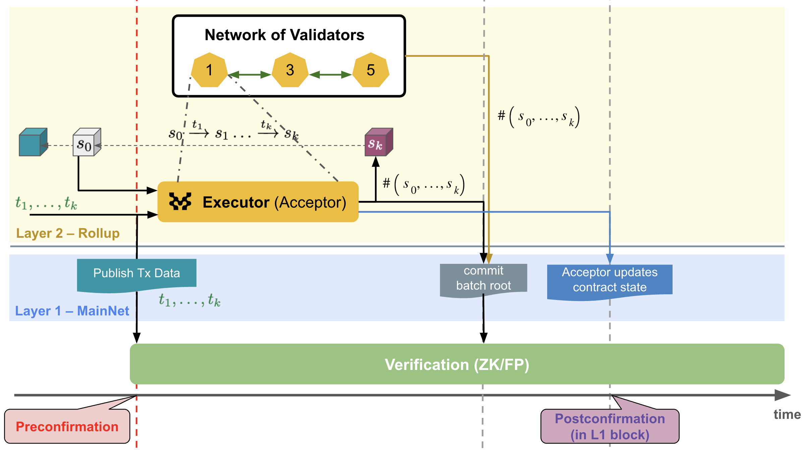

MIP-34: Fast-Finality Settlement
- Description: Establish the scope and components that are part of the Fast-Finality Settlement mechanism.
- Authors: Franck Cassez, Andreas Penzkofer
Abstract
Fast-Finality Settlement (FFS) is a mechanism that allows for fast confirmation of transactions backed by crypto-economic security. This MIP outlines the high-level specifications and architecture of FFS.
FFS is divided into
- Postconfirmation: a mechanism to confirm the validity of a block on L1
- L2-confirmation: a mechanism to confirm the validity of a block on L2
Definitions
We make a note for the following terms:
- batch (not recommended) Less clean, but more common term for sequencer-batch. May be mixed up with the batch of transactions sent to the sequencer, or with the batch of blocks that should be processed by the L1-contract.
- block More common term for L2-block. May be mixed up with the batch of transactions sent to the sequencer, the L1-block or with the batch of L2-blocks that should be processed by the L1-contract. Here we mean L2-block when we say block.
- attester (not recommended) The term attester has been deprecated in favor of validator.
- quorum certificate (not recommended) The term quorum certificate has been deprecated in favor of L2-confirmation certificate.
Motivation
Layer 2s (L2), including rollups, publish or secure transaction data in a data availability (DA) layer or at Ethereum mainnet (Layer 1, L1). Validity and optimistic rollups can finalize (confirm) transactions within approximately 30 minutes, resp. ~1 week. Until a transaction is finalized, there is no assurance about its validity and result (success or failure). This can be a limiting factor for certain types of DeFi applications.
Our objective is to enable transaction issuers to quickly get some guarantees that their transactions are correctly included in a block. The crypto-economic security is provided by a Proof-of-Stake (PoS) protocol.
The mechanism can be deployed independently for a chain, or used in combination with existing settlement mechanisms, such as ZK and optimistic settlements.
As a result, users can rely and trust the L2-confirmation (sometimes also described as L2-finality) to use as confirmation, or if the chain is configured to do so, wait for L1-finality, such as end of challenge window for fraud proofs (optimistic L2) or verification of a ZK-proof (validity L2).
A introduction to FFS can be found in this blog post on Fast-Finality Settlement. A more detailed description of a (partial) implementation of the mechanism is available at this blog post on postconfirmations.
This MIP provides an overview of an architecture of FFS, and its main components.
Specification
Overview
FFS. The objective of Fast Finality Settlement (FFS) is to confirm that transactions are processed correctly and that the node has read the transactions in the correct order. It does not impact the already established order of transactions by the sequencer.
At an abstract level, the L2-blockchain increases by a new block in each (L2) round, and this block is the successor of the block in the previous round, the predecessor. Initially, there is a genesis block with no predecessor.
Sequencer-Batch. Each round corresponds to the processing of a sequencer-batch of transactions which is proposed by the sequencer (can be centralized, decentralized, shared).
L2-Block. For the vast majority of cases we mean L2-blocks, thus we will omit the “L2-” prefix, i.e. by block we mean L2-block. A node with execution capability is in charge of validating the transactions in a sequencer-batch and calculate the new state. Since the sequencer-batches are provided by the sequencer, the new state and the state roots for a block are deterministic. For a sequencer-batch $b$ the state is $S_b$ and the state root is $H(S_b)$. From the sequencer-batch $b$ and the state $S_b$ the block $B$ is computed (which contains the information of the sequencer-batch and the state root).
Block-range. L2-Blocks can be constructed and confirmed on L2 at a higher rate than is feasible for L1. We group L2-blocks into a block-range that is confirmed together.
Local validation. Since a block is deterministically calculated we say a block (and the associated new state) is validated locally once the execution engine calculates it from the sequencer-batch.
The validity judgement to be made is:
[!NOTE] Given a block $B$ (predecessor), a sequencer-batch of transactions $txs$ and a successor block $B’$, is $B’$ the^[the MoveVM is deterministic and there can be only valid successor.] correct successor of $B$ after executing the sequence of transactions $txs$?
The term correct means that the successor block $B’$ (and the state it represents) has been computed in accordance with the semantics of the MoveVM, which we denote $B \xrightarrow{\ txs \ } B’$.
Validator. A node that is responsible for validating transactions and confirming L2-blocks. To guarantee the validity of a new block $B’$, we use a set of validators who are in charge of verifying the transition $B \xrightarrow{\ txs \ } B’$.
Attestation. A validator attests for a new block $B’$. This can be done, for example, by casting a vote :white_check_mark: (true) or :x: (false) for a proposal by a leader validator. Or by each validator sending the hash of the block they have validated.
L2-confirmation certificate. When enough validators have attested for a new block $B’$, the block is L2-confirmed (sometimes referred to as L2-final). The accumulation of enough votes is aggregated in an L2-confirmation certificate. A naive implementation of the L2-confirmation certificate is a list of votes.
[!NOTE] Until a better definition arises we consider confirmation to be defined as L2-finality (i.e. L2-confirmation).
L2-confirmation. FFS aims to confirm the validity of each produced L2-block, at every L2-block height.
[!IMPORTANT] If we confirm each successor block before adding it to the (confirmed) L2-chain, there cannot be any fork, except if the sequencer would provide equivocating sequencer-batches for a given height AND there is a sufficiently strong Byzantine attack on the confirmation process.
If the validators can attest blocks quickly and make their attestations available to third-parties, we have a fast confirmation mechanism supported by crypto-economic security, the level of which depends on what is at stake for the confirmation of a block.
Postconfirmation. At certain intervals confirmation will also be achieved on L1. The L1 contract will verify the satisfaction of the super-majority criteria. This provides an L1-protected postconfirmation that the block (or a batch of blocks, which we call block range) is confirmed. This additional anchoring mechanism increases the security of the L2-confirmation as it locks in the L2-confirmation, reduces the risk of long range attacks and provides a way to slash validators that have attested for invalid blocks.
Slashing. The security of the mechanism relies on a PoS protocol. Each validator has to stake some assets, and if they are malicious they should be slashed. The condition for slashing may be met by several quiteria, and not all slashing conditions may be used:
- equivocate (send a different vote to different validators or users)
- vote :white_check_mark: for an invalid block
- vote :x: for a valid block
Main challenges
To achieve crypto-economically secured fast finality, we need to solve the following problems:
- design a staking mechanism for the validators to stake assets, distribute rewards and manage slashing
- define and verify the threshold (e.g. 2/3 of validators attest :white_check_mark:) for L2-confirmation
- communicate the L2-confirmation status.
In addition the following may require separate discussion, as it is a different procedure (postconfirmations are handled in smart contracts on L1, whereas L2-confirmations are handled off-chain)
- define and verify the threshold (e.g. 2/3 of validators attest :white_check_mark:) for postconfirmation.
Components
Staking (addresses 1. and 2.)
The staking mechanism is implemented in a contract on L1. This contract provides the following functionalities:
- join: a new validator can join the set of validators by staking some assets
- exit: a validator exits and get their stakes back
- vote: receive a vote or a set of votes, verify the integrity of the votes (signatures) and the minimum threshold (e.g. 2/3)
Handle L2-confirmation (addreses 3.)
To ensure that the L2-confirmation status is made available to third-parties, we may publish our proof (2/3 of attestations :white_check_mark:) to a data availability layer and get a certificate that the proof is available.
This DA layer should offer a reliable mempool for example as described in this paper.
Handle postconfirmations (addresses 4.)
The L1 contract will verify the L2-confirmation certificate. If the certificate is correct the block (or sequence of blocks) are postconfirmed. This requires handling who should send the certificate to the L1 contract, and how to verify the certificate.
Reference Implementation
To simplify we assume that each validator stakes the same amount. The set of validators is in charge of validating sequenced batches and producing blocks that also commit to the state root of the sequenced batch.
There may be different protocols for the postconfirmation and the L2-confirmation. Version A and version B address Postconfirmation. Version C includes L2-confirmation.
Version A: Postconfirmation with leader-dependent blocks
A leader validator is elected for a certain interval. The leader proposes the next transition (block-range $B_r’$): $B_r \xrightarrow{\ txs \ } B_r’$. The leader can do so by sending a digest of $txs$ (Merkle root) and a digest of $B_r’$ (Merkle root hash of $B_r’$), or a change set. The leader commits on L1 to $B_r’$. Every validator checks the validity of $B_r’$ and prepares a vote message (:white_check_mark: or :x:).
Direct L1 commitments. The vote messages of each validator are directly sent to the L1 contract. Once enough votes are available on L1, the leader initiates the postconfirmation process.
Leader collects votes. The vote messages of each validator are directly sent to the L1 contract. Once the votes reach the required threshold :white_check_mark: for $B_r’$, the leader initiates the postconfirmation process with the proof of the votes.
 Figure 1: Postconfirmation: Leader-dependent L2-block generation process in Version A.
Version B: Postconfirmation with deterministic blocks
Blocks are deterministically derived from the sequencer-batch, and consequently the block-range $B_r’$ is deterministic. This is in contrast to Version A, where a leader proposes the next transition.Validators then attest for the next transition directly: $B_r \xrightarrow{\ txs \ } B_r’$. E.g. by commiting to the the hash of $B_r’$.
An additional actor - the acceptor - is introduced that initiates the postconfirmation process. This is necessary, as this step requires additional gas costs on L1 and thus this role requires additional rewards. The acceptor serves for a specified period and is then replaced by another validator.
[!NOTE] Since the block derivation is deterministic, $f+1$ may be sufficient to confirm the block. (However, we require $2f+1$ to cover potential edge cases, such as that the sequencer cannot be trusted.)
Direct L1 commitments. In the scenario where validators commit individually they send the block hashes of the calculated blocks directly to the L1 contract.
Acceptor collects commitments. In a more optimised scenario, the acceptor sends the super-majority proof to the L1 contract.
 Figure 2: Postconfirmation: Leader-independent (deterministic) L2-block generation process in Version B.
Version C: L2-confirmation with deterministic blocks
This approach extends Version B.
A p2p layer is established between validators. Validators communicate to aggregate a threshold of votes on each deterministically determined L2-block. This provides L2-confirmations in the order of seconds.
Since this approach already collects commitments off-L1, the natural choice is to use Version B where the acceptor collects the commitments and sends the super-majority proof to the L1 contract. This provides postconfirmations in the order of minutes.
 Figure 3: Postconfirmation + L2-confirmation: Leader-independent (deterministic) L2-block generation process in Version C. Validators co-operate to create a L2-confirmation certificate before L1 is involved.
Figure 3: Postconfirmation + L2-confirmation: Leader-independent (deterministic) L2-block generation process in Version C. Validators co-operate to create a L2-confirmation certificate before L1 is involved.
Verification
Correctness and Security
A more detailed discussion on the correctness and security is discussed in this blog post on FFS.
The level of security depends on the total stake of the L2 validators. The higher the more secure.
The correctness of the mechanism relies on a few trust assumptions.
Byzantine assumption. We assume that at most $f$ of the total $n=3f+1$ (L2) validators can be malicious. This implies that if more than $2f +1$ attest :white_check_mark: for a new block, at least $f + 1$ honest validators have attested :white_check_mark:, so at least one honest validator has :white_check_mark: $B’$ and $B’$ is valid. Thus, we request that >$\frac{2}{3}n$ (super-majority) validators have :white_check_mark: $B’$ to validate $B’$.
Postconfirmations. We assume that the contract that validates the proof of super-majority is correct (there are no bugs in the implementation of the contract). As a result, when the staking contract verification step is confirmed on L1 (L1-finality), the super-majority proof verification is L1-secure.
Combining the two results above we have: confirmation (L1 contract) that >2/3 of validators have attested :white_check_mark: and if >2/3 have attested :white_check_mark: then $B’$ is valid. So overall, if the >2/3 super-majority is verified by the staking contract, $B’$ is valid.
L2-confirmation The L2 validators also publish the proofs to a DA layer and once the proof is available it cannot be tampered with. Thus, we can provide some guarantees about the irreversibility of transactions when the availability certificate (of the L2-confirmation certificate) is delivered, and before the actual proof is verified on L1. If validators misbehave, they will be slashed on L1, which provides strong incentives for validators not to act malicious.
This is conditional to:
- ensuring that the validators send the same proof to the L1 staking contract and to the DA.
- validators cannot exit too early (not before the proof they are committed to are confirmed on L1).
Performance
There are several aspects that can impact performance and should be properly addressed:
- time to collect the super-majority votes
- time to get an availability certificate for the super-majority proof
- number and size of messages and transactions, specifically containing the signatures
Detailed plan and implementation
A detailed plan should be proposed addressing the implementation of the different components, and ideally MIPs to capture the requirements for each component.
- validators network: how they communicate and build the super-majority proof.
- L2-confirmation: communication of the super-majority proof to the DA. Validators should certificate in the order of seconds to provide confirmation guarantees in the order of seconds.
- postconfirmation: L1 validation contract, how it verifies the super-majority proof and if and how there is interaction with the DA layer.
- staking: what crypto-coin is used for staking, safeguards to prevent validators from exiting too early etc
Optimizations
There are several aspects that could be optimized and refined:
- super-majority proof: it can be a list of votes, but could also be a zk-proof (more compact). The suer-majority proof is not a proof of correct execution (as in zkVM) but simply of super-majority and this is cheaper to compute.
- signatures aggregation: we want to avoid sending large transactions to the L1 as it increases operational costs. How to aggregate signatures to send more compact messages/transactions?
- delegation/weighted stakes: a mechanism for validators to delegate their voting power to other validators. Ability for validators to stake different amounts (and use weighted stakes super-majority).
- commit to a sequence of L2-blocks. The L2-confirmation certificate could be per block. However, on L1 we may want to commit to a sequence of blocks. This can be done by committing to the state root of the last block in the sequence or more complicated approaches using Merkle roots.
- involvement of DA layer. Validators sent their votes or commitments to a DA layer off-L1. This ensures that votes remain available and can be used for potential slashing. This step should take O(1) second if we use a fast reliable mempool.
Errata
n/a
Appendix
n/a